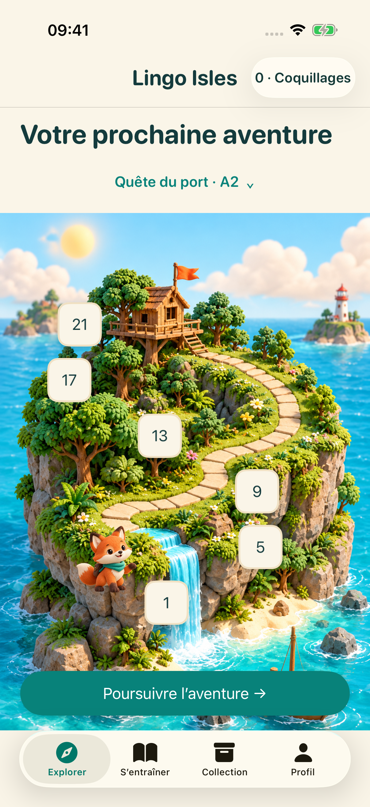
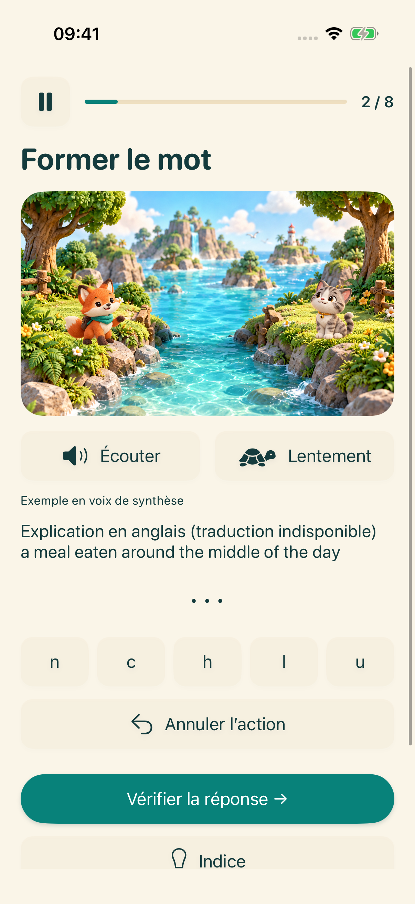
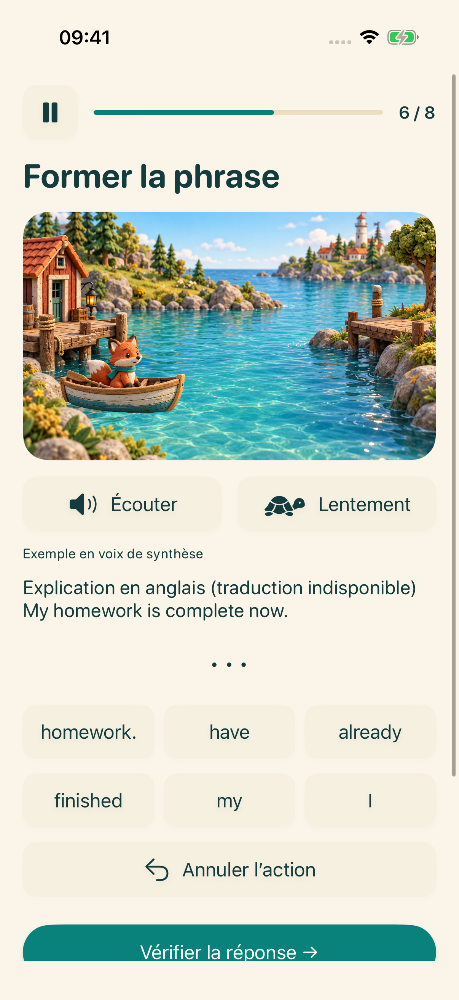
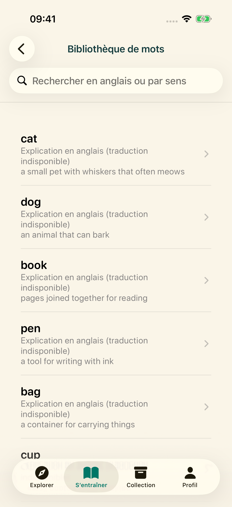

Votre prochaine île vous attend
Choisissez votre étape d’apprentissage et suivez un parcours de courts exercices d’anglais.
Explorez quatre îles d’apprentissage. Écoutez, formez des mots, assemblez des phrases et essayez votre voix, une petite découverte à la fois.
Explorez l’aventureLancement en préparation sur iPhone et iPad

Choisissez votre étape d’apprentissage et suivez un parcours de courts exercices d’anglais.

Écoutez la voix du système et placez les lettres pour travailler l’orthographe anglaise.

Remettez les mots dans l’ordre et découvrez comment se construisent les phrases anglaises.

Explorez le lexique, enregistrez vos favoris et révisez vos acquis.
Enregistrez-vous, réécoutez et réessayez. Une transcription facultative sur l’appareil est disponible sur les appareils compatibles. Il s’agit de s’exercer, sans note de prononciation.
L’interface prend en charge 16 langues. Les explications pédagogiques sont disponibles en anglais et en chinois simplifié ; dans les autres langues, les explications en anglais sont clairement signalées lorsqu’aucune traduction n’est disponible.
Le contenu pédagogique et la progression sont stockés sur votre appareil. Aucun compte ni synchronisation dans le cloud gérée par le développeur n’est nécessaire. Les ressources vocales dépendent de votre appareil ; les services publicitaires et de confidentialité nécessitent une connexion réseau.
Les profils de moins de 18 ans ou sans tranche d’âge ne lancent pas le parcours publicitaire. Pour les adultes, les publicités dépendent des choix de confidentialité et de leur disponibilité. Regarder des publicités avec récompense est facultatif.